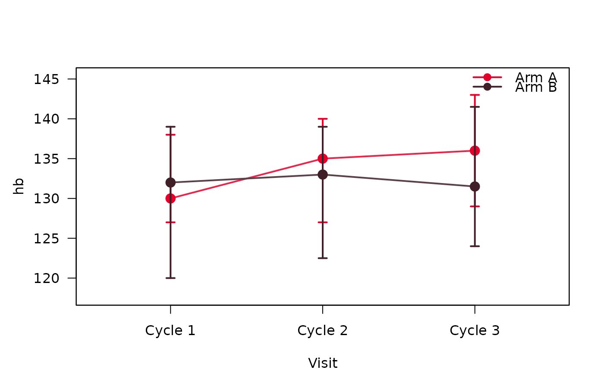
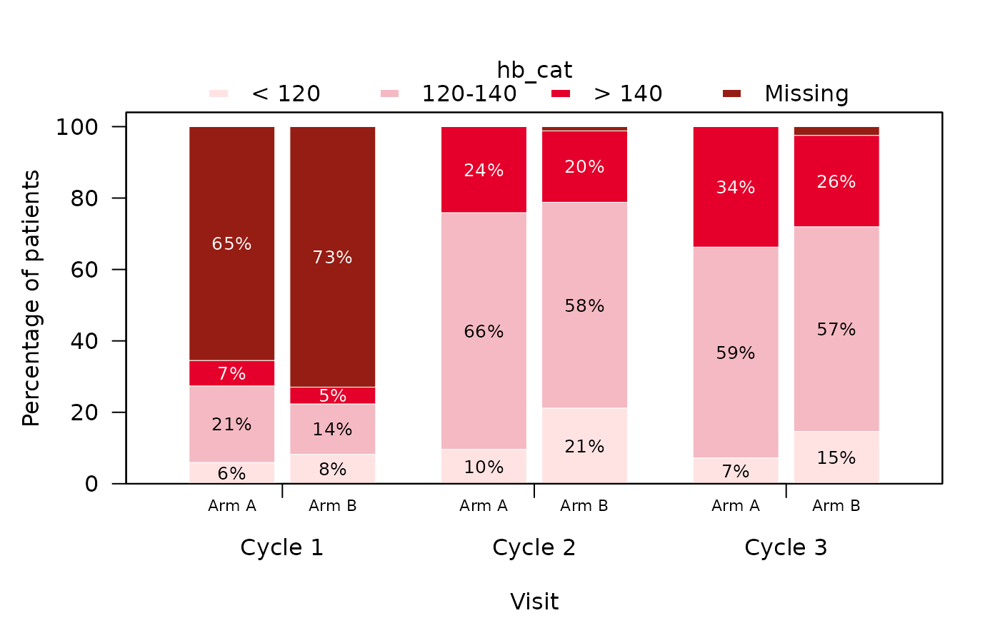

Produces the table of summaryByVisit() and one plot per variable (or
either of them alone, see type), the plots
over the visits: a line plot (lineplotSCI()) or boxplots
(boxplotSCI()) for continuous variables, and stacked barplots
(stackedbarplotSCI()) for categorical ones. The type of each plot follows
the type the variable has in the table, so that table and plots agree.
Usage
summarizeByVisitSCI(
data,
vars = NULL,
group = NULL,
labels = NULL,
stat_cont = "median_range",
stat_cat = "n_percent",
visit = "visit",
order = NULL,
visitgroup = NULL,
missing = TRUE,
missing_percent = TRUE,
missing_text = "Missing",
continuous_as_categorical = NULL,
type = c("both", "table", "plot"),
plot_cont = c("lineplot", "boxplot"),
plot_args = list(),
as_flex_table = TRUE,
border = TRUE,
...
)Arguments
- data
A data frame or tibble containing the data to be summarized.
- vars
Variables to include in the summary table. Need to be specified with quotes, e.g.
"age"orc("age", "response"). Default to all variables present in the data exceptgroup.- group
A single column from
data. Need to be specified with quotes, e.g."treatment". Summary statistics will be stratified according to this variable. Default to NULL. A maximum of 3 groups are currently supported. Character variables and a character group are shown in natural order (e.g. "2" before "10"); factors keep their level order.- labels
A list containing the labels that should be used for the variables in the table, either named by variable (e.g.
list(age = "Age (years)")) or unnamed in the order ofvars. If NULL, labels are automatically taken from the dataset. If no label present, the variable name is taken.- stat_cont
Summary statistic to display for continuous variables. Options include "median_IQR", "median_range" (default), "mean_sd", "mean_se" and "geomMean_sd".
- stat_cat
Summary statistic to display for categorical variables. Options include "n", "n_N" and "n_percent" (default).
- visit
Name of the stratum for which summary statistics are displayed by line. Typically, this would be
"visit".- order
A numerical variable defining the visit order. If NULL (default), visits are sorted naturally (e.g. "Visit 2" before "Visit 10"); if
visitis a factor, its level order is used instead.- visitgroup
A grouping variable for the stratum for which summary statistics are displayed by line. Must be an ordered factor. Typically, this would be a visit group such as e.g., baseline, follow-up etc.
- missing
Logical. If TRUE (default), the missing values are shown (only for categorical variables).
- missing_percent
Indicates whether percentages for missings are shown (TRUE, default) or not (FALSE) for categorical variables. If "both", then both options are displayed next to each other.
- missing_text
String indicating text shown on missing row. Default to "Missing".
- continuous_as_categorical
A subset (vector) of continuous vars to be treated as categrical. Default is NULL.
- type
What to produce:
"both"(the default) the table and a plot per variable,"table"the table alone, or"plot"the plots alone. The table is built in every case, since it decides the type of each plot.- plot_cont
The plot for continuous variables:
"lineplot"(the default) or"boxplot".- plot_args
A named list of further arguments for the plotting functions, e.g.
list(risk_table = TRUE, col = c("grey", "black")). Each plot receives the arguments its function has.- as_flex_table
Logical. If TRUE (default) the gtsummary object is converted to a flextable object. Useful when rendering to Word.
- border
Logical. If TRUE, a border will be drawn around the table. Only available if flex_table = TRUE. Default is TRUE.
- ...
Further arguments passed on to
summaryByVisit(), e.g.digits_cont,add_noroverall.
Value
An object of class summarizeByVisitSCI (and summarizeSCI), a
list with table and plots; see summarizeSCI().
Details
The settings of the table carry over to the plots:
stat_contsets what the line plot shows:"median_range"the median with minimum and maximum,"median_IQR"the median with the quartiles,"mean_sd"/"mean_se"the mean +/- one standard deviation / standard error, and"geomMean_sd"the geometric mean alone;the variable labels become the axis or legend titles;
missing/missing_percentdecide whether missing values form a segment of their own (as they are counted in the table's percentages), andstat_cat = "n"shows counts instead of percentages;continuous_as_categoricalvariables are plotted as stacked bars.
The visits appear in the order of the table. If order is given, its values
also set the spacing of the visits in the line plots.
Examples
library(summarySCI)
data("hemoglobin_data")
hb <- subset(hemoglobin_data, visit_nr <= 3) # first 3 cycles, to keep it short
hb$hb_cat <- cut(hb$hb, c(-Inf, 120, 140, Inf),
labels = c("< 120", "120-140", "> 140"))
res <- summarizeByVisitSCI(hb, vars = c("hb", "hb_cat"),
group = "Arm", visit = "visit", order = "visit_nr",
stat_cont = "median_IQR")
res$plots$hb

res$plots$hb_cat
